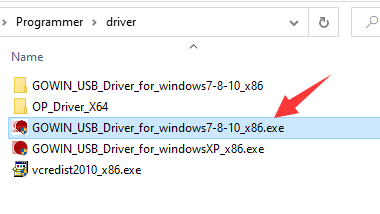
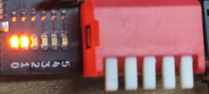
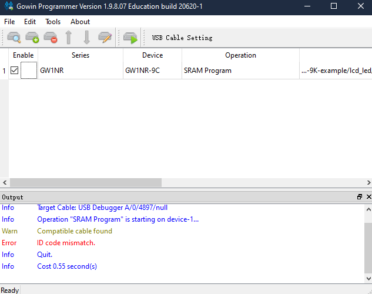
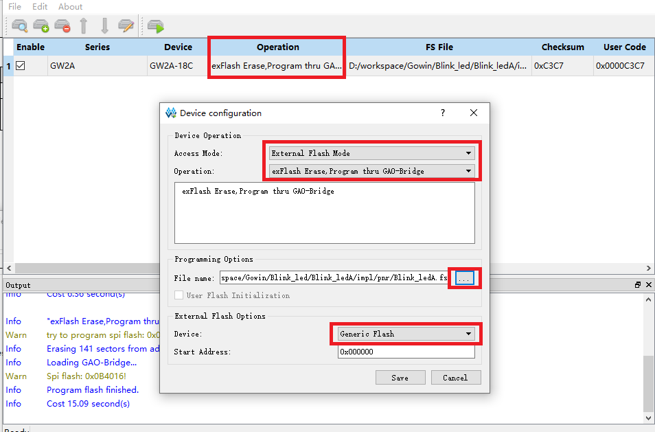
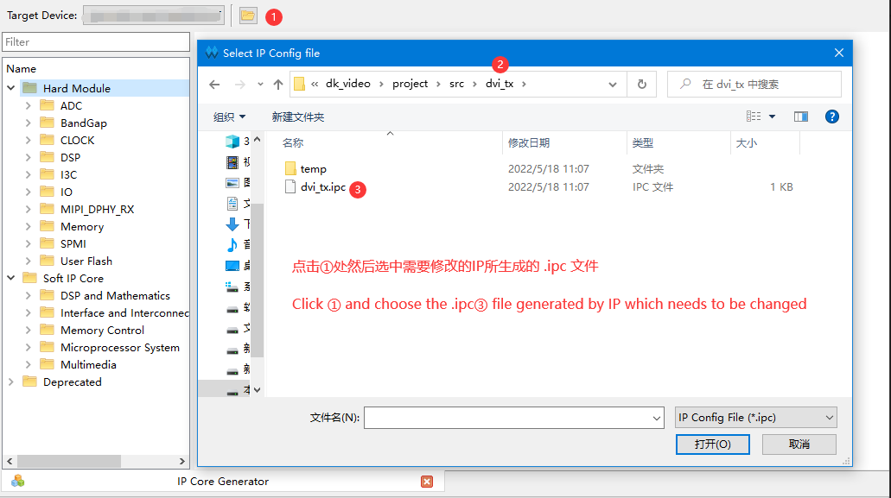

中文
中文常见问题
更新历史
| 日期 | 版本 | 作者 | 更新内容 |
|---|---|---|---|
| 2025-02-18 | v0.5 | Serika |
|
| 2023-09-30 | v0.6 | serika |
|
| 2023-05-18 | v0.5 | wonder |
|
| 2023-02-23 | v0.4 | wonder |
|
| 2022-10-19 | v0.3 | wonder |
|
| 2022-09-23 | v0.2 | wonder |
|
| 2022-06-29 | v0.1 | wonder |
|
这里汇总一些常见问题。
器件相关
如何分辨器件辨版本
- FPGA镭雕印记的第三行第五位，如果是字母 A 就是Device Version: A，如果是字母 B 就是**Device
Version: B** ，如果是字母 C 就是Device Version: C，以此类推。
这个方法适用于所有的 GOWIN FPGA，下图以138K Pro的 GW5AST 为例说明器件步进的标记位置。
CSS Indentation 点击此处查看138K-B FPG676A器件版本印记
Programmer 相关
首先确定设备管理器中有两个 converter 设备和一个 COM 设备，这说明设备正常连接到电脑并且电脑成功加载驱动了。
点开查看图片详情
下载器都有 串口 和 Jtag 功能，但是要注意的是在使用串口的时候， Jtag 功能是不能用的。解决串口占用这种情况，重新插拔一下板卡的 USB 数据线就好了。
只有两个 convertor
点开查看图片详情
如果出现没有 COM 设备但是有两个 converter 设备，可以 鼠标右键点击 converter B -> 属性 -> 高级 -> 加载 VCP ，然后点击 OK ，重新插拔一下 USB 数据线就行了。
点开查看图片详情
没有 convertor
调试器连接电脑后，需要十多秒时间加载驱动。不想等待加载驱动的话可以手动下载驱动并安装驱动 点我跳转到驱动下载页面。
点开查看图片详情
有 convertor，但是出现了感叹号（错误）
点开查看图片详情
- 感叹号可能是单一的
USB Serial Conveter A或B，也可能二者都有； - 请尝试上方所有的建议，卸载并重新安装FTDI驱动；
- 如果上述方法都没有用，请尝试更新板载调试器的固件，参考这篇指南。
下载频率
要注意下载频率应该为 2.5M 或者更低的数值。不然很可能导致下载极其缓慢或者下载失败等问题。
点开查看图片详情

点击下图中的 Frequency，设置频率小于或者等于 2.5M
点开查看图片详情

接着再点击 Save 即可
Error found
确定设备管理器中的 convertor 和 COM 都存在时，可以先重启一下 programmer 软件。
Cable lost
这种情况一般是因为在烧录固件时，因为数据线与开发板连接不稳定导致的。可以重新烧录一下。
Cabel open failed
点开查看图片详情
在板卡通电的时候需要 2~3s 时间来加载驱动，加载成功后电脑设备管理器中会显示出两个 converter 设备，这个时候就可以正常烧录了。
点开查看图片详情

这里的意思是没有找到下载器，可以尝试使用高云半导体所提供的最新的教育版的编程器 点我跳转 来尝试解决老版本 Programmer 软件的 bug。
使用新版本下载器后出现这个问题的话，可以先重启一下 programmer 软件；依旧没找到的话可以看看本篇开头的 converter 相关的内容。
点开查看相关说明
No Gowin devices found
点开查看详情图片
这里指的是没有扫描到高云设备，可以尝试使用高云半导体所提供的最新的教育版的编程器【点我跳转】来尝试解决老版本 Programmer 不识别 Tang JTAG 的问题。
点开查看图片详情
Nano 9K
Nano 9K 在设计的时候将 JTAG_SEL 引脚连接到了 S2 按键上，根据高云手册可以知道 JTAGSEL_N=0 的时候，芯片的 Jtag 引脚可以正常使用。
点开查看相关说明
在使用 Programmer 对 Nano 9K FPGA 板卡进行操作的时候按住 S2 按键就可以了。
Primer 20K
20K Dock 套件要注意拨动拨码开关使能核心板后，下载软件才可以通过底板识别到底板所插入的核心板。
点开查看图片详情
| 使能核心板 | 未使能状态 | 补充说明 |
|---|---|---|
 |
 | 未使能核心板的话板子上的 0、1 号 LED 会一直亮着，且核心板不会正常启动。 |
单独使用 20K 核心板和 RV Debugger Plus 下载器来下载固件出现这个错误时，可能是接线错了，自己根据下面的表格检查一下线序，或者检查一下核心板的 8pin 接口有没有被怼歪（有一次连接失败，发现是引脚歪了然后连接不上下载器了；不要大力出奇迹）。
20K 核心板 JTAG 引脚定义可以在背部看到。
| 核心板 | 5V0 | TMS | TDO | TCK | TDI | RX | TX | GND |
| 调试器 | 5V0 | TMS | TDO | TCK | TDI | TX | RX | GND |
点开查看接线详情

对于 20K 板卡来说可能是因为 JTAG 复用而导致主控芯片的 JTAG 引脚不再能被调试，点我来查看相应解决办法
ID code mismatch
点开查看相关说明
这种情况是工程文件设置的芯片与实际下载芯片型号不一致而造成的。
重新设置工程中的芯片型号（比如工程设置、引脚约束、各个IP中的型号）。
| 板卡型号 | 芯片系列 | 芯片设备 | 封装 | 速度等级 |
|---|---|---|---|---|
| Tang Nano | GW1N | GW1N-1 | QN48 | C6/I5 |
| Tang Nano 1K | GW1NZ | GW1NZ-1 | QN48 | C6/I5 |
| Tang Nano 4K | GW1NSR | GW1NSR-4C | QN48P | C6/I5 或者 C7/I6 |
| Tang Nano 9K | GW1NR | GW1NR-9C | QN88P | C6/I5 |
| Tang Nano 20K | GW2AR | GW2AR-18C | QN88 | C8/I7 |
| Tang Primer 20K | GW2A | GW2A-18C | PBGA256 | C8/I7 |
| Tang Primer 25K | GW5A | GW5A-25A | MBGA121N | C1/I0 |
| Tang MEGA 60K | GW5AT | GW5AT-60B | PG484A | C1/I0 |
| Tang MEGA 138K | GW5A(S)T | GW5AT-138B | PG484A | C1/I0 |
| Tang MEGA 138K Pro | GW5AST | GW5AT-138B | FPG676A | C1/I0 |
spi flash selected mismatch
以高云半导体小蜜蜂（芯片名称以 GW1N 开头的系列）家族芯片为主控的板卡芯片内部含有 FLASH，因此下载的时候将生成的固件烧录到芯片内部即可，将板载的 FLASH 芯片当作外设使用。
以高云半导体晨熙（芯片名称以 GW2A 开头的系列）家族和晨熙V（芯片名称以 GW5A 开头的系列）芯片为主控的板卡芯片内部无有 FLASH，因此下载的时候将生成的固件烧录到外部 FLASH，对此在 Programmer 界面所进行的下载模式与 FLASH 选择如下：
点开查看设置详情
|  | 操作（Operation）为 exFlash Erase,Program thru GAO-Bridge |
Flash 型号选择为 Generic Flash |
下载卡住、下载非常慢
不要选中带有 Verify 选项的。
点开查看相关说明

另外自己注意设置一下下载频率，一般设置为 2.5MHZ 不会有异常
点开查看操作步骤图片
点击下图中的 Frequency
接着再点击 Save 即可
找不到下载文件
一般来说生成的下载文件（拓展后缀为.fs）在工程目录下的 impl/pnr 文件夹里面。
点开查看相关图文说明

在上图中可以看到这个下载文件的路径为 /fpga_project1/impl/pnr/fpga_project1.fs
其中 fpga_project1 为工程目录，impl 为 IDE 生成的目录，然后所需要的文件位于 pnr 文件夹内
然后那个拓展名为 .fs 的文件就是下载到 fpga 的固件
Directory *** has null character.
文件路径有不支持的字符。
- 关掉 IDE
- 检查文件路径，要求路径只包含英文和下划线，检查路径是否有空格
- 重新打开工程，清除综合缓存后再重新重新综合。
烧录结束后没反应
一般这种情况是没有选择正确的烧录文件。可以自己先对应着各个板子点灯文档里所选择的芯片型号来检查一下自己的工程，然后看看自己的代码是否有问题。对于 20K 板卡来说可能是因为 JTAG 复用而导致主控芯片的 JTAG 引脚不再能被调试，点我来查看相应解决办法
IDE 使用相关
查看IP文档
在 IDE 里面的 IP 界面点击想要查看的 IP 文档后点击对应的语言即可跳转到对应的说明
点开查看相关说明
修改设置过的 IP
在 IDE 里面的 IP 界面点击上方器件选型旁边的文件夹后打开已生成 IP 编辑界面
点开查看相关说明
设置 TOP 层
对于含有多个模块的工程，成功例化后，在 IDE -> Hierarchy 页面右键想要设置为顶层的模块，然后选择 Set As Top Module 将它设置为顶层模块了。
点开查看相关说明
如果在 Hierarchy 页面出现下下表左图现象，这表明代码里有逻辑错误，比如 语法错误、例化错误 等等，点击右上角的 RTL Anakysis Error ，就可以在弹出的对话框里看到错误的类型代码以及错误的位置，如下表右图所示。
点开查看错误详情
| RTL Analysis Error | 错误类型以及详情 |
使用 GAO
GAO 是高云半导体在线逻辑分析仪（Gowin Analyzer Oscilloscope）。安装高云 IDE 之后就能在对应的安装相对路径下看到相关文档了
点开查看相关说明
使用高云半导体所提供的最新的教育版的编程器 【点我跳转】 能够正常使用 GAO
因为 GAO 必须在 IDE 内才能打开，所以你需要自己替换掉安装时候的 Programmer 文件夹，并且确定替换后的路径与之前的相同。
点开查看相关说明

macOS 如何使用GOWIN IDE
云半导体所提供的最新的教育版的云源软件已有macOS支持【点我跳转】，并已支持 Apple Silicon 处理器的Mac。